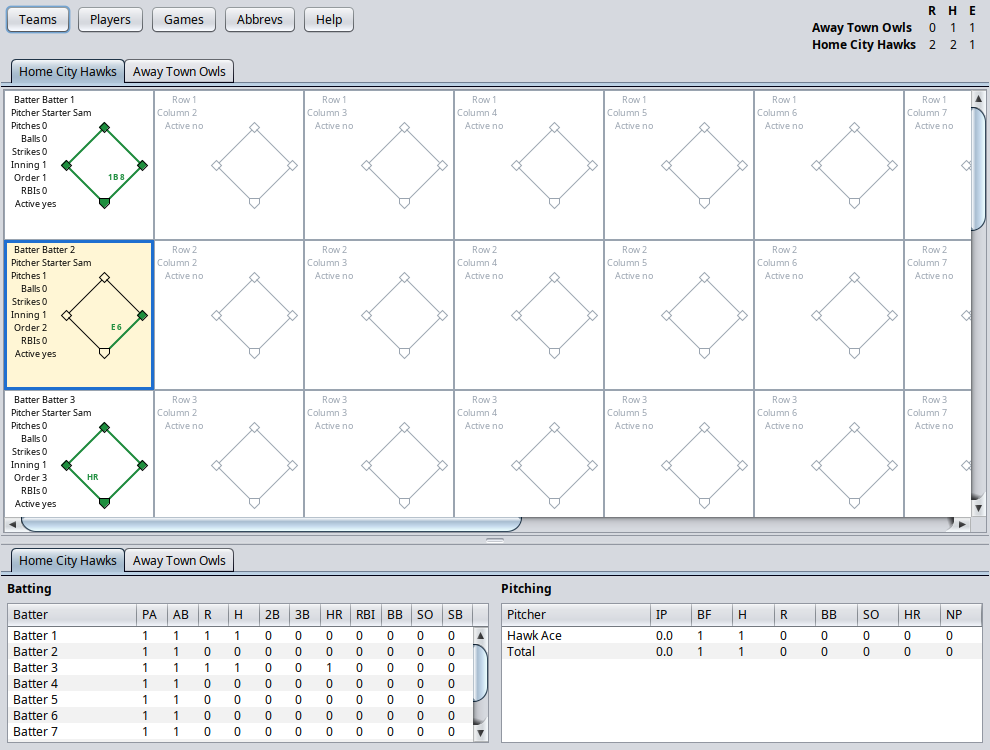
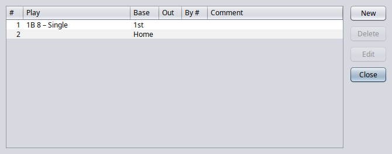
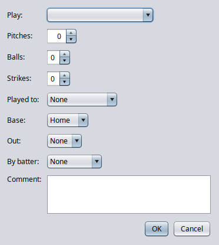

Scorecard keeps a baseball scorecard at-bat by at-bat. It draws each at-bat like a box on a paper card, keeps the score, and works out batting and pitching stats as you go.
Every window has a Help button that opens this manual at the part about that window. F1 does the same.
Contents
~/.scorecard/scorecard.db. There is no Save
button. Back up that file to keep a copy of your games.mvn package in ~/projects/scorecard, so the
desktop button picks up the new version.The window has four parts: the buttons and scoreline along the top, a grid of at-bats for each team, and the stats underneath.

Set up teams, players and scoring abbreviations once; every game uses them. Each list has New, Delete, Edit and Close buttons, and double-clicking a row edits it.
Abbreviations are the codes you score plays with, such as 1B, K or E.
Click Games to list every game, newest first, with its date, game number, away team and home team.
The team lists show each team's name and city as of the game's date. The app remembers the open game and reopens it the next time it starts.
Every label in a cell is a button: left-click to pick or add one, right-click to take one away. The pointer turns into a hand over anything you can click.
An empty cell is gray and lists only its row, column and "Active no". Click Active to start an at-bat there. The cell turns black and lists the batter, pitcher and count.
A new at-bat fills itself in:
Autofill only fills a blank batter or pitcher; it never replaces someone you picked. In the first inning there is nothing to copy, so pick them yourself.
| Label | Left-click | Right-click |
|---|---|---|
| Batter | Pick the batter | — |
| Pitcher | Pick the pitcher | — |
| Pitches | Add a pitch (up to 99) | Take one away |
| Balls | Add a ball (up to 4); also adds a pitch | Take one away, and a pitch |
| Strikes | Add a strike (up to 3); also adds a pitch | Take one away, and a pitch |
| Inning | Next inning | Previous inning |
| Order | Next batting-order spot (up to 9) | Previous spot |
| RBIs | Add a run batted in (up to 4) | Take one away |
| Active | Turn the at-bat on or off | — |
Turning an at-bat off greys it out and leaves it out of the stats and the scoreline, but keeps what you entered. Turn it back on to restore it.
Clicking Batter or Pitcher opens a list of the team's players as of the game date. Double-click a name, or select it and click OK. Add makes a new player for the team, even when it has none yet. Cancel leaves the at-bat as it was.
The last at-bat you clicked is highlighted with a pale yellow background and a blue border, so you can keep your place. It stays highlighted when dialogs open and close, until you click another cell or open a different game.
Click the diamond of an active at-bat to record what happened. The first play is the batter's own result; any later plays move the batter around the bases as a runner.


| Field | What to enter |
|---|---|
| Play | The abbreviation, such as 1B, K or SB. The list shows each with its description. |
| Pitches, Balls, Strikes | The count when the play happened. |
| Played to | The fielder the ball went to, by scoring number: 1 pitcher, 2 catcher, 3 first base, 4 second base, 5 third base, 6 shortstop, 7 left field, 8 center field, 9 right field. |
| Base | The base reached safely: None, First, Second, Third or Home. For an out, the base the runner was out at. |
| Out | Which out of the inning it made (1, 2 or 3), or None. |
| By batter | For a runner, the batter whose play moved them up. The list shows each batting-order spot with that player's name. |
| Comment | Anything else worth remembering. |
Example: Batter 1 singles to center, then scores on Batter 3's double. Enter two plays on Batter 1's at-bat: Play 1B, Played to 8, Base First; then Base Home, By batter 3.
Rest the mouse on a diamond to see its plays listed in a small table: number, play with description, base, out, fielder, count, By batter and comment. Columns with nothing in them are left out. The tooltip stays until you move the mouse off the diamond. An at-bat with no plays says "No plays yet. Click to add one."
The stats and scoreline update as you score, counting only active at-bats. Each team's tab shows its batters and the pitchers who faced the other team, each with a Total row. Rest the mouse on a column heading to see what it means.
Batters are listed in batting order; one who hasn't been picked yet shows as "(not picked)".
| Column | Meaning | Counted from |
|---|---|---|
| PA | Plate appearances | Every active at-bat |
| AB | At-bats | Plate appearances except BB, IBB, HBP, SAC, SF and CI |
| R | Runs scored | The batter reached home |
| H | Hits | First play 1B, 2B, 3B or HR |
| 2B, 3B, HR | Doubles, triples, home runs | First play 2B, 3B or HR |
| RBI | Runs batted in | The at-bat's RBIs count |
| BB | Walks | First play BB or IBB |
| SO | Strikeouts | First play K or KL |
| SB | Stolen bases | Each SB play |
Pitchers are listed in the order they appeared.
| Column | Meaning | Counted from |
|---|---|---|
| IP | Innings pitched (.1 and .2 are thirds) | Batters put out |
| BF | Batters faced | Every active at-bat |
| H, BB, SO, HR | Hits, walks, strikeouts, home runs allowed | As for batting |
| R | Runs allowed | Batters faced who later scored |
| NP | Number of pitches | The at-bat's pitch count |
A pitcher is charged with every batter they faced, including runs those batters score later off another pitcher.
The top-right corner shows R, H and E for each team, away first, as in a box score. Runs and hits match the batting Totals. Errors count every play scored E against the team in the field, both reaching base on an error and moving up on one later.
| To | Do this |
|---|---|
| Start or stop an at-bat | Left-click Active in its cell |
| Pick the batter or pitcher | Left-click Batter or Pitcher |
| Add a pitch, ball, strike, inning, spot or RBI | Left-click its label |
| Take one away | Right-click its label |
| Record or see the plays | Left-click the diamond |
| Read the plays without opening them | Rest the mouse on the diamond |
| Edit a row in any list | Double-click it |
| Open help for the current window | Click Help, or press F1 |
mvn package in
~/projects/scorecard.~/.scorecard/scorecard.db; it holds all teams, players
and games.